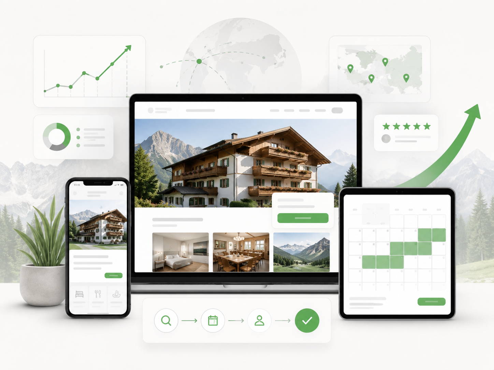

Unsichtbare Kapazität
Zimmer sind verfügbar, aber Gäste finden oder buchen sie nicht einfach genug.

TFV hilft kleinen Hotels, Pensionen, Apartments und privaten Gastgebern in Österreich, freie Zimmer sichtbar, buchbar und profitabler zu machen.
Viele Gastgeber haben kein Marketingproblem allein. Sie haben ein Strukturproblem: zu wenig Zeit, zu viele Plattformen, zu wenig Überblick und Systeme, die nicht zusammenarbeiten.
Zimmer sind verfügbar, aber Gäste finden oder buchen sie nicht einfach genug.
Booking, Airbnb, Google, Website, Nachrichten und Kalender laufen nebeneinander.
Gästeservice, Reinigung, Bewertungen und Angebote bleiben liegen.
Unser Ansatz ist modular. Wir bauen genau die Bausteine auf, die Ihr Betrieb braucht. Nicht mehr, nicht weniger.
sichtbar und buchbar
Kanäle synchron
Service & Reinigung
Preise & Auslastung

Wir starten mit Analyse und setzen dann in der richtigen Reihenfolge um. So entsteht kein digitales Durcheinander, sondern ein funktionierender Gastgeber-Alltag.
Wir prüfen Sichtbarkeit, Buchbarkeit, Preise, Bewertungen und Systeme.
Wir definieren die wichtigsten Hebel für Ihren Betrieb.
Wir richten Website, Plattformen, Systeme und Inhalte ein.
Wir unterstützen im laufenden digitalen Betrieb.
Wir optimieren Buchungen, Reviews und Auslastung.
Direkte Anfragen, bessere Darstellung und weniger Abhängigkeit von Provisionen.

Wir helfen bei Abläufen, Partnern, Gästeservice und digitaler Kommunikation.


Kleine Betriebe brauchen keine Konzernsysteme. Sie brauchen klare, einfache und wirksame Lösungen.
Lassen Sie uns prüfen, wo Ihr Betrieb heute steht und welche Maßnahmen zuerst Wirkung bringen.